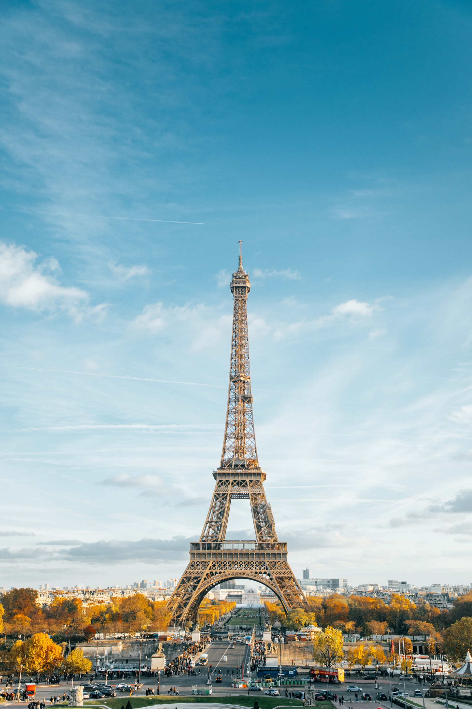

Tourist Attractions

Eiffel Tower: Among all the best places in Paris the first thing that pops in our head when talking about the city, is the Eiffel Tower, one of the most popular places to go in Paris. This is a place that is worth visiting. This is a place where you can have a completely different experience. It is not only one of the topmost tourist attractions in the city but it also one of the most beautiful places in the whole world. Without visiting this place your Paris trip remains incomplete. Make sure that you have enough time while visiting this place.
The Louvre: Situated in the heart of the city, Louvre is the most visited and most popular art museum and gallery in the entire world. It is also amongst the most beautiful places to visit in Paris. Spread over sprawling 21,000 hectares, this museum is located in a royal fort, also called the Louvre. The relics of the same are still visible in the basement area.

Arc De Triomphe: Built in the honor of imperial army in the 19th century, Arch of Triumph is an excellent structure and one of the famous places in Paris. The amazing sculptures, pillar carvings and engraved victory tales on the arc are the elements of beauty here. The beauty of the place lies in its beautiful architecture. It is guaranteed that you are sure to get mesmerized by the amazing architecture of the place. It is because of its a beautiful architecture that the place is so popular among the tourists.
Notre Dame Cathedral: Notre Dame is a famous and beautiful Roman Catholic cathedral – one of the top places to visit in Paris. The Gothic style architecture, the amazing sculptures and gargoyles fascinate every traveler. Its beauty lies in its ruins and domed roof. If you want to witness the beautiful architecture in Paris then this the place to be.